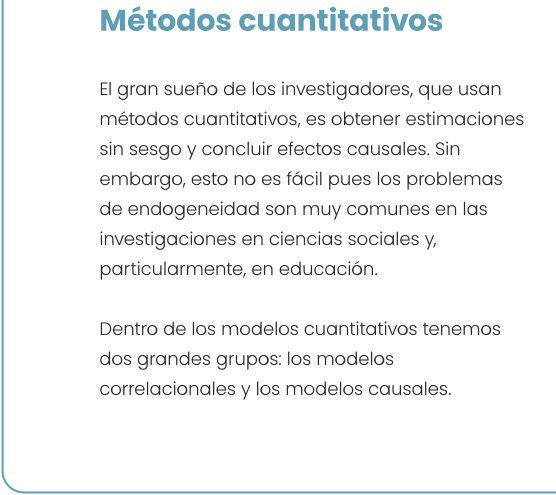
Métodos cuantitativos
El gran sueño de los investigadores, que usan métodos cuantitativos, es obtener estimaciones sin sesgo y concluir efectos causales. Sin embargo, esto no es fácil pues los problemas de endogeneidad son muy comunes en las investigaciones en ciencias sociales y, particularmente, en educación.
Dentro de los modelos cuantitativos tenemos dos grandes grupos: los modelos correlacionales y los modelos causales.
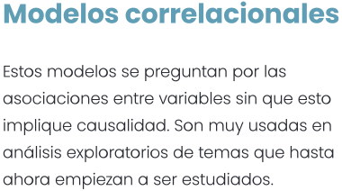
Modelos correlacionales
Estos modelos se preguntan por las asociaciones entre variables sin que esto implique
causalidad. Son muy usadas en análisis exploratorios de temas que hasta ahora empiezan a
ser estudiados.
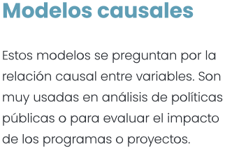
Modelos causales
Estos modelos se preguntan por la relación causal entre variables. Son muy usadas en
análisis de políticas públicas o para evaluar el impacto de los programas o proyectos.
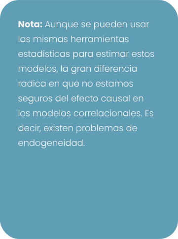
Nota: Aunque se pueden usar las mismas herramientas estadísticas para estimar
estos modelos, la gran diferencia radica en que no estamos seguros del efecto causal en
los modelos correlacionales. Es decir, existen problemas de endogeneidad.
Problemas de sesgo (endogeneidad)
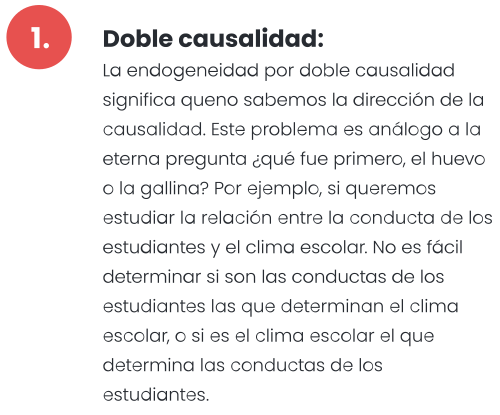
Doble causalidad:
La endogeneidad por doble causalidad significa queno sabemos la dirección de la causalidad.
Este problema es análogo a la eterna pregunta ¿qué fue primero, el huevo o la gallina? Por
ejemplo, si queremos estudiar la relación entre la conducta de los estudiantes y el clima
escolar. No es fácil determinar si son las conductas de los estudiantes las que determinan
el clima escolar, o si es el clima escolar el que determina las conductas de los
estudiantes.
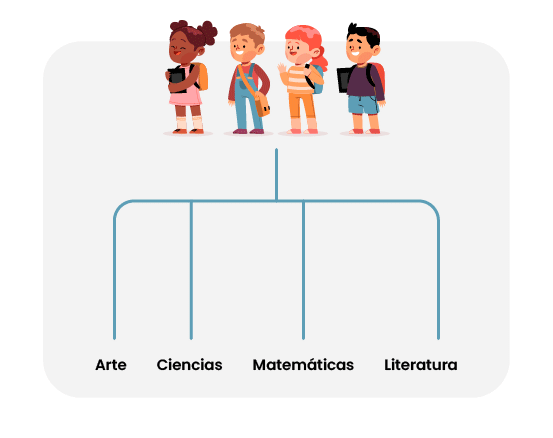
Autoselección:
Las personas generalmente se auto-seleccionan para participar en proyectos o programas
particulares. Supongamos que queremos evaluar si una innovación educativa mediada por la
tecnología tiene efecto sobre los aprendizajes de los estudiantes. Los estudiantes con
mayor inclinación a la tecnología podrán tener a su vez mayor facilidad para resolver
problemas. Si los estudiantes que participan en la innovación se auto-seleccionan, es
posible que los resultados de aprendizaje no sean solamente por la innovación sino también
por la mayor facilidad para resolver problemas.
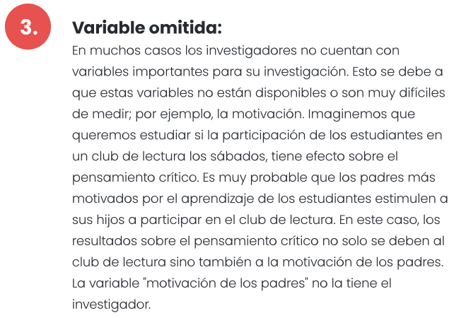
Variable omitida:
En muchos casos los investigadores no cuentan con variables importantes para su
investigación. Esto se debe a que estas variables no están disponibles o son muy difíciles
de medir; por ejemplo, la motivación. Imaginemos que queremos estudiar si la participación
de los estudiantes en un club de lectura los sábados, tiene efecto sobre el pensamiento
crítico. Es muy probable que los padres más motivados por el aprendizaje de los estudiantes
estimulen a sus hijos a participar en el club de lectura. En este caso, los resultados
sobre el pensamiento crítico no solo se deben al club de lectura sino también a la
motivación de los padres. La variable "motivación de los padres" no la tiene el
investigador.
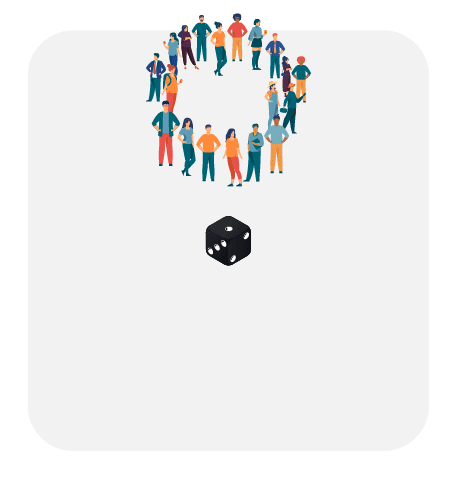
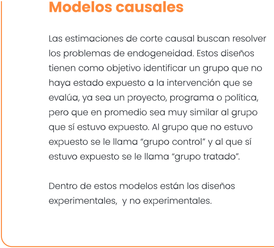
Modelos causales
Las estimaciones de corte causal buscan resolver los problemas de endogeneidad. Estos diseños tienen como objetivo identificar un grupo que no haya estado expuesto a la intervención que se evalúa, ya sea un proyecto, programa o política, pero que en promedio sea muy similar al grupo que sí estuvo expuesto. Al grupo que no estuvo expuesto se le llama “grupo control” y al que sí estuvo expuesto se le llama “grupo tratado”.
Dentro de estos modelos están los diseños experimentales, y no experimentales.
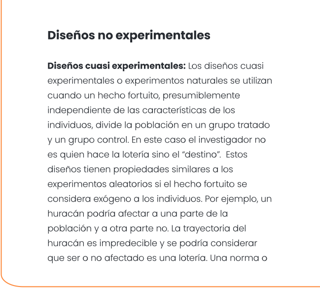
Diseños no experimentales
Diseños cuasi experimentales: Los diseños cuasi experimentales o experimentos naturales se utilizan cuando un hecho fortuito, presumiblemente independiente de las características de los individuos, divide la población en un grupo tratado y un grupo control. En este caso el investigador no es quien hace la lotería sino el “destino”. Estos diseños tienen propiedades similares a los experimentos aleatorios si el hecho fortuito se considera exógeno a los individuos. Por ejemplo, un huracán podría afectar a una parte de la población y a otra parte no. La trayectoria del huracán es impredecible y se podría considerar que ser o no afectado es una lotería. Una norma o política también se podrían ver como un cuasi experimento.
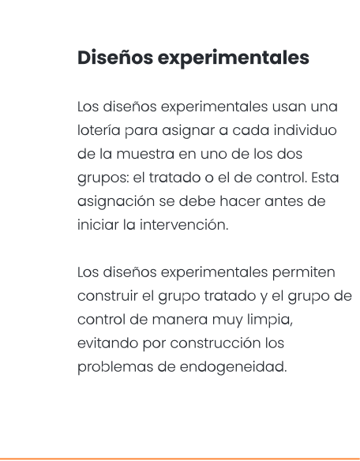
Diseños experimentales
Los diseños experimentales usan una
lotería para asignar a cada individuo de la muestra en uno de los dos grupos: el tratado o el de control. Esta asignación se debe hacer antes de iniciar la intervención.
Los diseños experimentales permiten construir el grupo tratado y el grupo de control de manera muy limpia, evitando por construcción los problemas de endogeneidad.
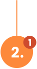
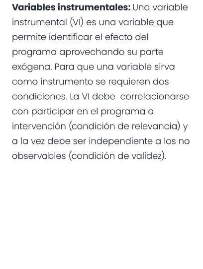
Variables instrumentales: Una variable instrumental (VI) es una variable que permite
identificar el efecto del programa aprovechando su parte exógena. Para que una variable
sirva como instrumento se requieren dos condiciones. La VI debe correlacionarse con
participar en el programa o intervención (condición de relevancia) y a la vez debe ser
independiente a los no observables (condición de validez).
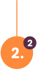
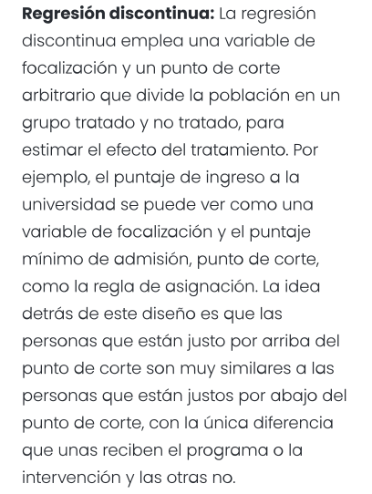
Regresión discontinua: La regresión discontinua emplea una variable de focalización y
un punto de corte arbitrario que divide la población en un grupo tratado y no tratado, para
estimar el efecto del tratamiento. Por ejemplo, el puntaje de ingreso a la universidad se
puede ver como una variable de focalización y el puntaje mínimo de admisión, punto de
corte, como la regla de asignación. La idea detrás de este diseño es que las personas que
están justo por arriba del punto de corte son muy similares a las personas que están justos
por abajo del punto de corte, con la única diferencia que unas reciben el programa o la
intervención y las otras no.
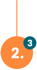
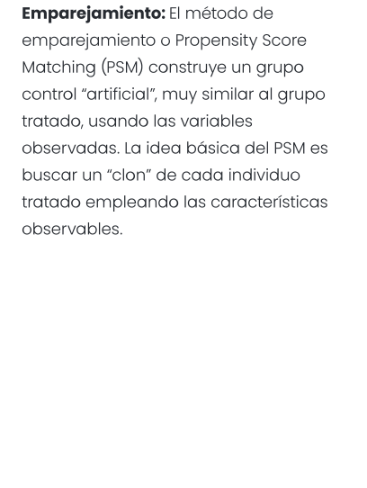
Emparejamiento: El método de emparejamiento o Propensity Score Matching (PSM)
construye un grupo control “artificial”, muy similar al grupo tratado, usando las variables
observadas. La idea básica del PSM es buscar un “clon” de cada individuo tratado empleando
las características observables.